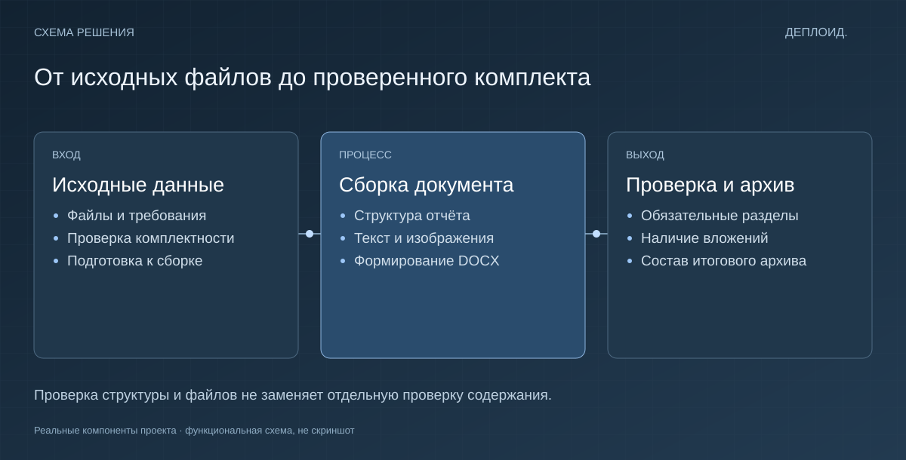

Проверка исходников
До сборки проверяется, какие файлы есть и чего не хватает для выполнения требований.
Документы · Python
Собрать документ мало: нужно ещё убедиться, что внутри всё на месте. Я связал подготовку отчёта, проверку файлов и упаковку результата в один процесс.

Задача
При ручной сборке легко забыть файл, пропустить раздел или приложить не ту версию. Такие ошибки обычно находят уже после передачи результата.
Решение
Процесс начинается с проверки исходников. Затем собирается отчёт, проверяются его структура и вложения. После этого результат упаковывается в архив.
Почему сделано именно так
До сборки проверяется, какие файлы есть и чего не хватает для выполнения требований.
Проверяется, что документ открывается и содержит нужные элементы: заголовки, изображения и структуру.
Состав итогового комплекта проверяется отдельно. Сборка файла и готовность к передаче — разные шаги.
Проверки открывают DOCX и проверяют обязательные элементы: заголовки, изображения и состав файлов. Отдельно проверяется архив. Эти проверки ловят конкретные технические ошибки; содержательная проверка текста остаётся отдельной задачей.

Собственный внутренний инструмент. Python, DOCX, файловые проверки. Обложка — иллюстрация идеи проекта. Функциональная схема находится в технических подробностях. Код и рабочие данные не публикуются.